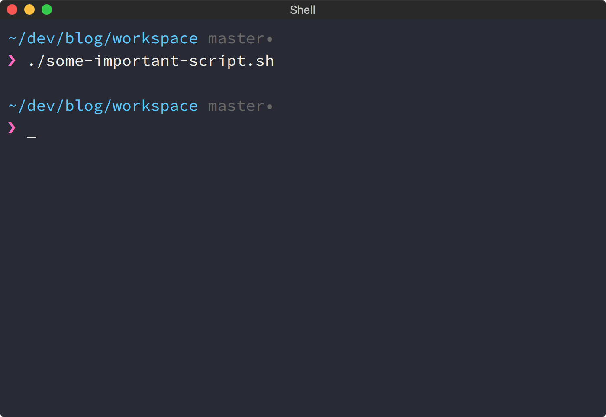
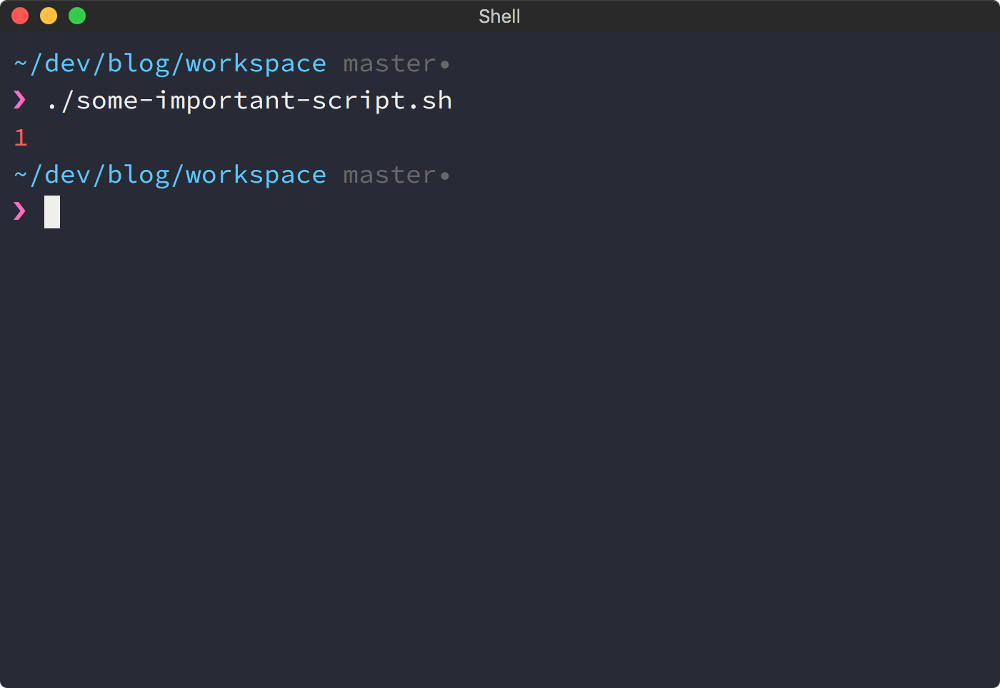

Process Exit Code
Small tip to make your bash shell experience a bit better.
There is a nice way to stop being confused when you run a command and it finishes silently.
What just happened? Did it fail? Did it do the job but just haven't written any message? Mystery.
To fix it you can write an exit code right after a command output if the code was not zero.

If you are using some popular theme for
Bash-it you
probably have this solved already. If not, you're going to need
PROMPT_COMMAND
environment variable.
How To
Add new function to your .bash_profile:
show_exit_code() {
local ex=$?
local color_red="\033[0;31m"
local color_reset="\033[0m"
if [ $ex -ne 0 ]
then
echo -e "$color_red$ex$color_reset"
fi
}The function saves exit code of the last executed command and then writes it in red color if the code is not zero.
Now add this function call into PROMPT_COMMAND
variable
show_exit_code() {
local ex=$?
local color_red="\033[0;31m"
local color_reset="\033[0m"
if [ $ex -ne 0 ]
then
echo -e "$color_red$ex$color_reset"
fi
}
PROMPT_COMMAND="show_exit_code;$PROMPT_COMMAND"Bash will execute string inside the variable like a command right before displaying new prompt.
Now, open new terminal tab or re-read bash configuration with a command:
source ~/.bash_profileLinks
- Bash-it — set of plugins, completions and themes for Bash
- Example of using PROMPT_COMMAND
- My Bash-it theme